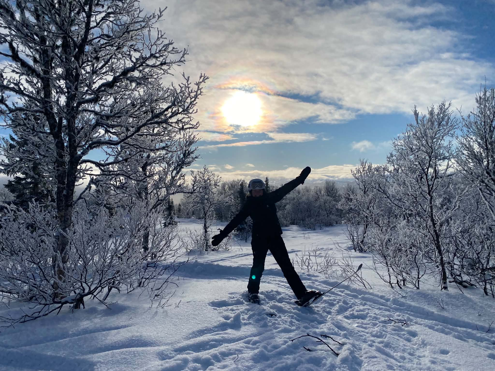

Skidåkning
En sak som jag inte nämnde är att jag älskar åka skidor!
När jag var liten så åkte vi en vecka per år till Sälen, det var där jag lärde mig att åka.
Nu när jag är uppe i Hemavan längtar jag bara till vintern, då jag kan när som helst gå ut till backarna och åka!
Jag brukar säga att det är terapi för själen.

Olika skidsystem
Jag har gjort en liten lista på tre olika skidsystem, jag har kollat på hur många liftar och pistar det finns,
samt hur högt upp man kommer med skidor på bergen.
Jag har jämfört Hemavan, för jag bor tillfälligt här,
men också Åre och Trysil för de är kända skidorter här i norden:
| Hemavan | Åre | Trysil | |
|---|---|---|---|
| Liftar | 9 | 47 | 41 |
| Pistar | 36 | 89 | 69 |
| Meter över havet | 1135 | 1274 | 1132 |

Ifall ni vill läsa mer om just Hemavan så kan ni klicka här! Så kanske vi syns i backarna!